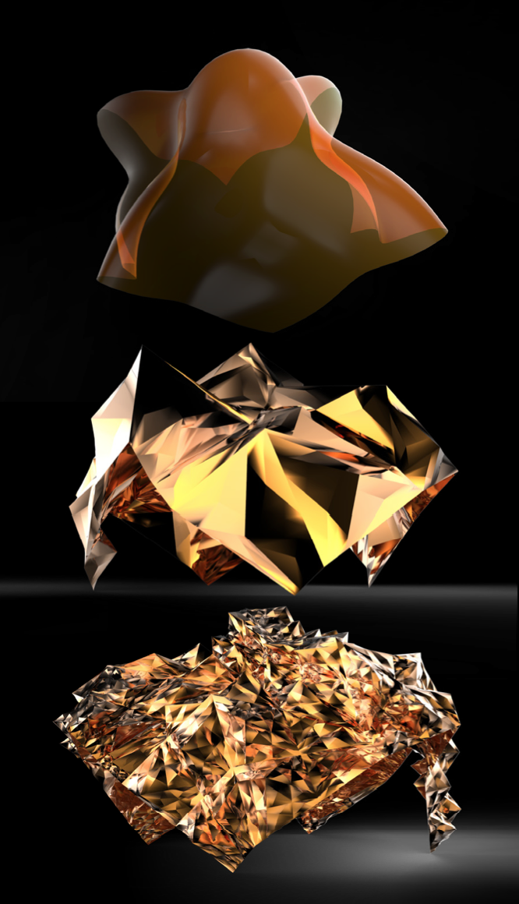

Rhino.Python - tessellation and subdivision
Using recursive loop and drawing to tessellate and subdivide surfaces. Warning: This is only the rough first version so contain lots of problems and bugs. Use it carefully, otherwise it will crash your computer. A lot of problem need to be solved. Problem: The dirction and orientation of subdivision faces should be organized. Using surface is not an efficient way. Should turn surfaces into meshes.

diagram
"""
####################################################################
Computational Design Assignment 04
Tessellation and Subdivision
Written by:
Gene Ting-Chun Kao
This is only the rough first version so contain lots of problems and bugs.
Use it carefully, otherwise it will crash your computer.
problem:
The dirction and orientation of subdivision faces should be organized.
Using surface is not a good way. Should turn surfaces into meshes.
####################################################################
"""
import rhinoscriptsyntax as rs
import Rhino as rh
import math
import Rhino.Geometry as rg
from scriptcontext import escape_test
from scriptcontext import doc
from random import *
def DivideSrfUV(srf, dividU, dividV):
"""
Divid surface method
return: uv vector
uv position using vector, so uv can be calculate later.
"""
domainU = rs.SurfaceDomain(srf, 0)
domainV = rs.SurfaceDomain(srf, 1)
uStep = (domainU[1]-domainU[0])/dividU
vStep = (domainV[1]-domainV[0])/dividV
uvList = []
for i in range(dividU+1):
u0 = domainU[0] + uStep*i
if i < (dividU):
u1 = domainU[0] + uStep*(i+1)
for j in range(dividV+1):
v0 = domainV[0] + vStep*j
if j < (dividV):
v1 = domainV[0] + vStep*(j+1)
vec00 = rg.Vector3d(u0,v0,0)
vec01 = rg.Vector3d(u1,v0,0)
vec02 = rg.Vector3d(u1,v1,0)
vec03 = rg.Vector3d(u0,v1,0)
uvList.append( [ vec00, vec01, vec02, vec03 ] )
return uvList
def subdivision(srf, uvList, iteration):
newSrf = []
count = 0
ratio = 0.2
for panelUV in uvList:
if count%2 == 1:
midPt00 = vecRatio(panelUV[0], panelUV[1], ratio)
midPt01 = vecRatio(panelUV[1], panelUV[2], ratio)
midPt02 = vecRatio(panelUV[2], panelUV[3], ratio)
midPt03 = vecRatio(panelUV[3], panelUV[0], ratio)
else:
midPt00 = vecRatio(panelUV[0], panelUV[1], ratio, True)
midPt01 = vecRatio(panelUV[1], panelUV[2], ratio, True)
midPt02 = vecRatio(panelUV[2], panelUV[3], ratio, True)
midPt03 = vecRatio(panelUV[3], panelUV[0], ratio, True)
midPts = [ midPt00, midPt01, midPt02, midPt03 ]
centerPt = vecAverage(midPts)
#centerPt = vecAverage(panelUV)
pt0 = rs.EvaluateSurface(srf, panelUV[0][0], panelUV[0][1])
pt1 = rs.EvaluateSurface(srf, midPt00[0], midPt00[1])
pt2 = rs.EvaluateSurface(srf, panelUV[1][0], panelUV[1][1])
pt3 = rs.EvaluateSurface(srf, midPt03[0], midPt03[1])
pt4 = rs.EvaluateSurface(srf, centerPt[0], centerPt[1])
pt5 = rs.EvaluateSurface(srf, midPt01[0], midPt01[1])
pt6 = rs.EvaluateSurface(srf, panelUV[3][0], panelUV[3][1])
pt7 = rs.EvaluateSurface(srf, midPt02[0], midPt02[1])
pt8 = rs.EvaluateSurface(srf, panelUV[2][0], panelUV[2][1])
centerNormal = rs.SurfaceNormal( srf, pt4 )
centerPtExtrude = vecExtrude(pt4, centerNormal, iteration*3 + 0.4)
pt4 = centerPtExtrude
s0 = rs.AddSrfPt([pt0,pt1,pt4,pt3])
s1 = rs.AddSrfPt([pt1,pt2,pt5,pt4])
s2 = rs.AddSrfPt([pt4,pt5,pt8,pt7])
s3 = rs.AddSrfPt([pt3,pt4,pt7,pt6])
newSrf.append(s0)
newSrf.append(s1)
newSrf.append(s2)
newSrf.append(s3)
count += 1
escape_test()
for s in newSrf:
if iteration > 0:
uv = DivideSrfUV(s, 1, 1)
subdivision(s, uv, iteration-1)
rs.DeleteObject(s)
else:
break
return newSrf
def vecAverage(vecList):
preVec = rg.Vector3d(0,0,0)
for vec in vecList:
preVec = rg.Vector3d.Add(preVec, vec)
return rg.Vector3d.Divide(preVec, len(vecList))
def vecRatio(vecA, vecB, r = 0.5, rotation = False):
if rotation == False:
if r > 1:
r = 1
elif r < 0:
r = 0
else:
r = r
else:
if r > 1:
r = 0
elif r < 0:
r = 1
else:
r = 1 - r
vecBA = rg.Vector3d.Subtract(vecA, vecB)
rVec = rg.Vector3d.Multiply(r, vecBA) + vecB
return rVec
def vecExtrude(vec, normal, s = 1):
normal = rs.VectorScale(normal, s)
extrudePt = rs.VectorAdd(vec, normal)
return extrudePt
def main():
surface = rs.GetObject("pick a surface.", rs.filter.surface)
rs.EnableRedraw(False)
uv = DivideSrfUV(surface, 3, 3)
subdivision(surface, uv, 2)
rs.EnableRedraw(True)
if __name__ == "__main__":
main()